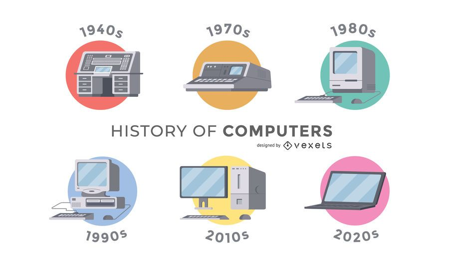

History of Computer Science
Computer Science has grown rapidly and it is still growing from its roots in mathematics and electrical engineering. Here are vital milestones in the field:
- 1940s: Early computers are developed for military and academic purposes.
- 1960s: The concept of software engineering emerges.
- 1980s: Personal computers become widely accessible.
- 2000s: The rise of the internet revolutionizes technology and software.
- Today: AI, Machine Learning, and Big Data are shaping the future of CS.
